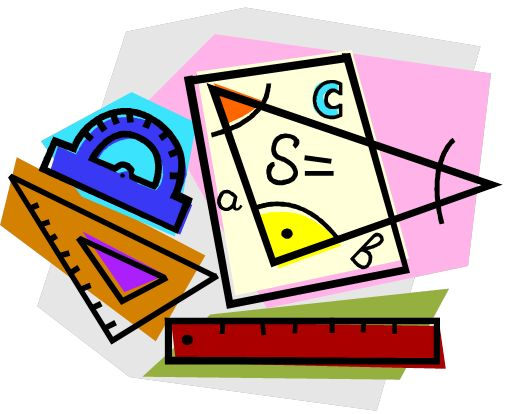

Definicion

Introducción
La trigonometría es la parte de la matemática que se encarga de estudiar y medir los triángulos, las relaciones entre sus ángulos y lados, y sus funciones trigonométricas de seno, coseno, tangente, cotangente, secante y cosecante.
Esta rama matemática se relaciona, directa o indirectamente, con otras áreas científicas, y se aplica a todo aquello que requiera de medidas de precisión, como la geometría espacial y la astronomía para la medición de las distancias entre estrellas respecto a otros puntos geográficos.
El estudio de la trigonometría existe desde hace más de tres mil años y es importante saber que en Babilonia y Egipto se tomaban en cuenta las medidas de los ángulos de los triángulos para construir pirámides.
¿Cuál es la importancia de la trigonometría?
La aplicación de las funciones trigonométricas en la física, astronomía, telecomunicaciones, náutica, ingeniería, cartografía, entre otros ámbitos, es lo que las dota de relevancia, pues permiten calcular distancias con precisión sin tener que, necesariamente, recorrerlas.
Sabiendo esto, la importancia de la trigonometría radica en las diversas aplicaciones que tiene por ejemplo:
Calcular la distancia entre dos puntos, de los cuales uno, o incluso ambos, son inaccesibles.
Calcular de forma precisa distancias y ángulos de inclinación, siendo de gran utilidad para la ingeniería civil.
Calcular la altura de un punto en pie que puede ser, también, inaccesible.
¿Cuáles son las unidades de medida en trigonometría?
Cuando se estudia la medida de los ángulos, así como su cálculo, la trigonometría se vale de las siguientes unidades:
Radián: unidad angular básica en trigonometría que indica la relación que existe entre el ángulo que se forma a partir del radio de una circunferencia y un arco que tenga la misma longitud. Una circunferencia completa está conformada por dos radianes.
el gradián o grado centesimal: que permite dividir la circunferencia en cuatrocientos grados centesimales.
Grado sexagesimal: unidad angular que divide una circunferencia en 360 grados, considerando que cada ángulo recto posee 90 grados y si se divide la circunferencia a cuatro partes iguales, la suma de cada ángulo dará un total de 360. Se suele utilizar en el campo práctico de ramas como la ingeniería, arquitectura o la física.
¿Cuáles son las funciones trigonométricas?
Se entiende por funciones trigonométricas a la relación métrica entre los lados de un triángulo rectángulo. A partir de un triángulo que presente un ángulo recto de 90 grados se pueden determinar tres elementos fundamentales:
Ángulos: área del plano que se encuentra entre dos semirrectas con origen común. Se trata de la amplitud del arco de una circunferencia, centrada en el vértice y delimitada por sus lados.
Catetos: resto de lados que conforman un triángulo. Se pueden clasificar en cateto opuesto (que se encuentra del lado opuesto o en frente del ángulo estudiado) y el adyacente (que se encuentra junto al ángulo analizado).
Hipotenusa: lado de mayor longitud de un triángulo y está opuesto al ángulo recto.
Entendidos estos tres conceptos fundamentales, las funciones trigonométricas son:
Seno: razón que existe entre el cateto opuesto del ángulo de estudio y la hipotenusa.
Coseno: división del cateto adyacente del ángulo analizado entre la hipotenusa del triángulo.
Tangente: razón que existe entre el lado opuesto y el cateto adyacente del triángulo. Se expresa como la división del seno entre el coseno.
Cada función trigonométrica tiene su razón recíproca, es decir:
Secante: razón recíproca del coseno que consiste en la relación entre la longitud de la hipotenusa y la longitud del cateto adyacente.
Cosecante: razón recíproca del seno que consiste en la relación entre la longitud de la hipotenusa y la longitud del cateto opuesto.
Cotangente: razón recíproca de la tangente que consiste en la relación entre la longitud del cateto adyacente y la del opuesto.